Locking down the VCF management domain with the DFW, following the VMware Validated Solution. The rules were already there, just turned off. The work is enabling them one category at a time: Infrastructure, Environment, Application. Click any photo to see it full screen.
Lab topology
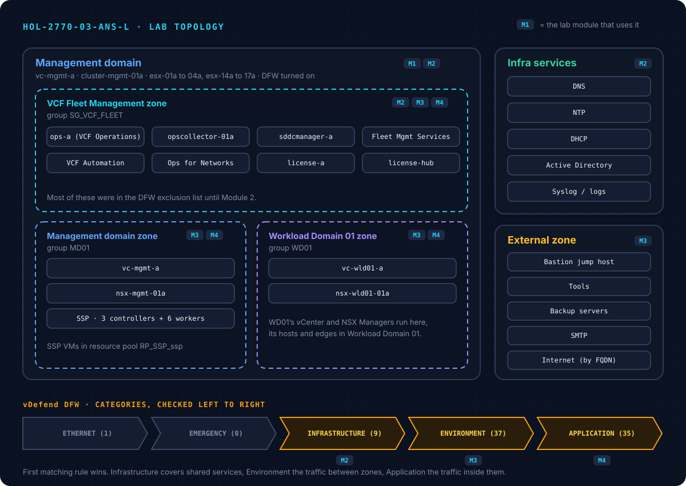
Module 1: Secure VCF Infrastructure with VMware vDefend Firewall
Mostly reading. In vc-mgmt-a, all the management VMs run on cluster-mgmt-01a, the SSP VMs too:
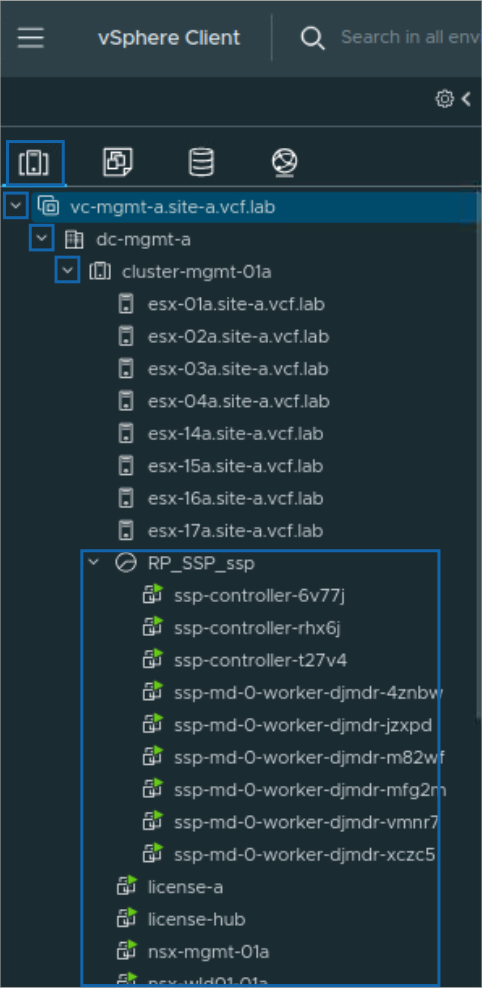
Module 2: Infrastructure rules
In nsx-mgmt-01a: Security > Distributed Firewall > Category Specific Rules > Infrastructure:
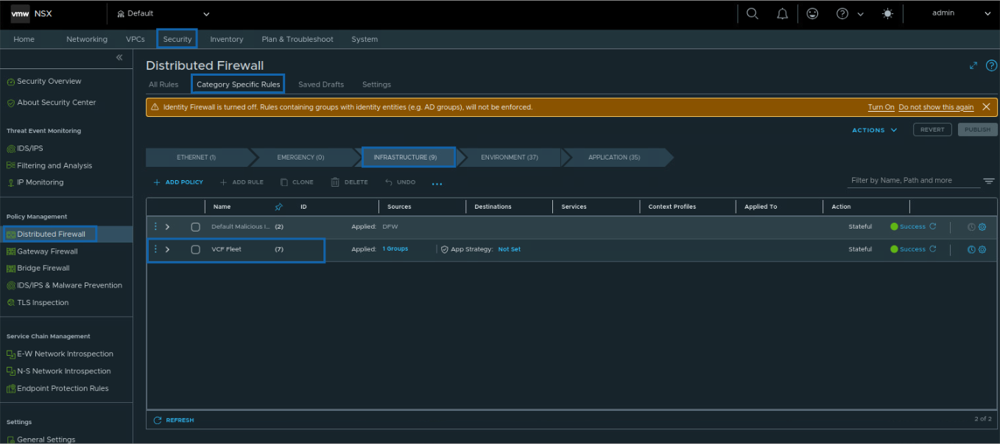
Six allow rules from SG_VCF_FLEET to DNS, NTP, DHCP, AD (both ways) and the log servers. The 7th, VCF Fleet Lockdown, drops those same services to anything else. So the fleet can only use the approved servers.
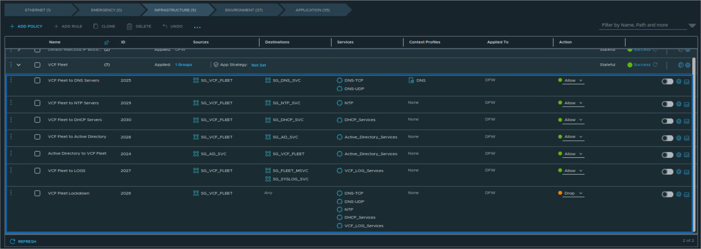
Turn on DFW for the cluster
Rules do nothing until DFW is on for the cluster. Settings > General Firewall Settings:
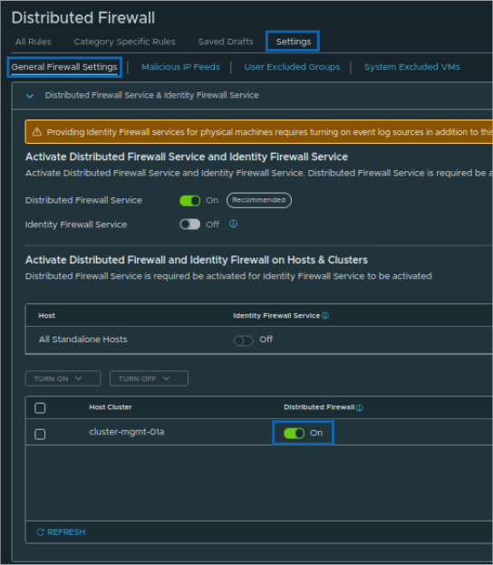
Exclusion list
VMs in the exclusion list skip the DFW completely. VCF adds every VM it deploys there by default, so it can't lock itself out before any rules exist. Now that the rules are ready, they come out:
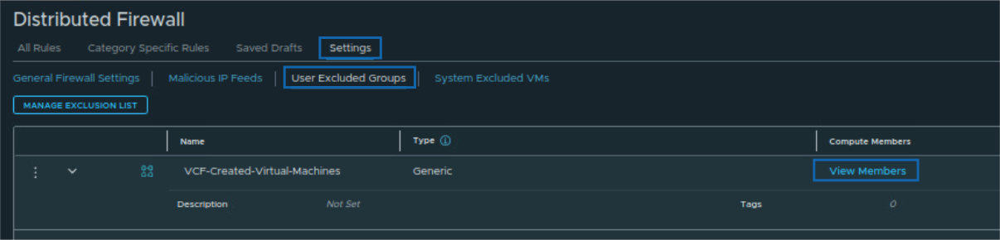
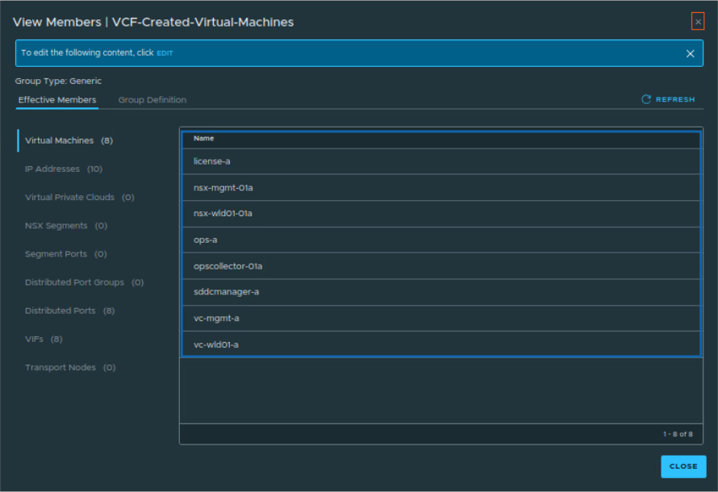
Remove the group from the list, not the VMs from the group. It's one change, easy to undo, and the VCF-managed group stays untouched:
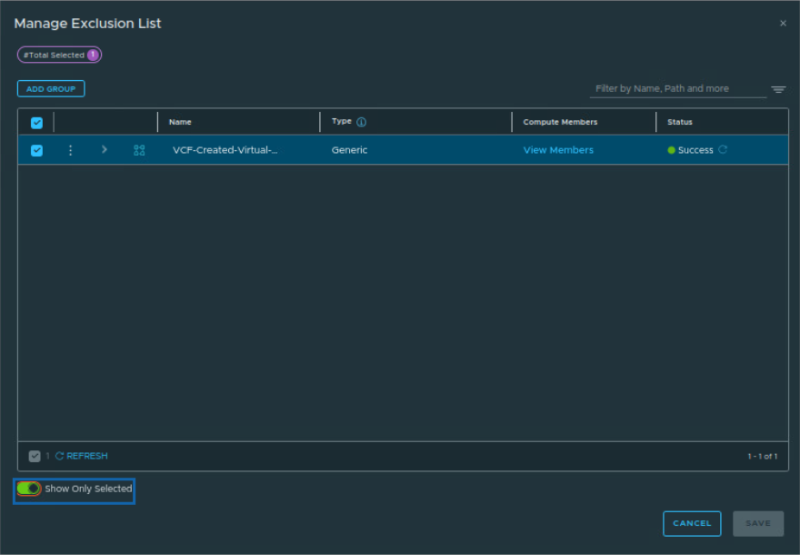
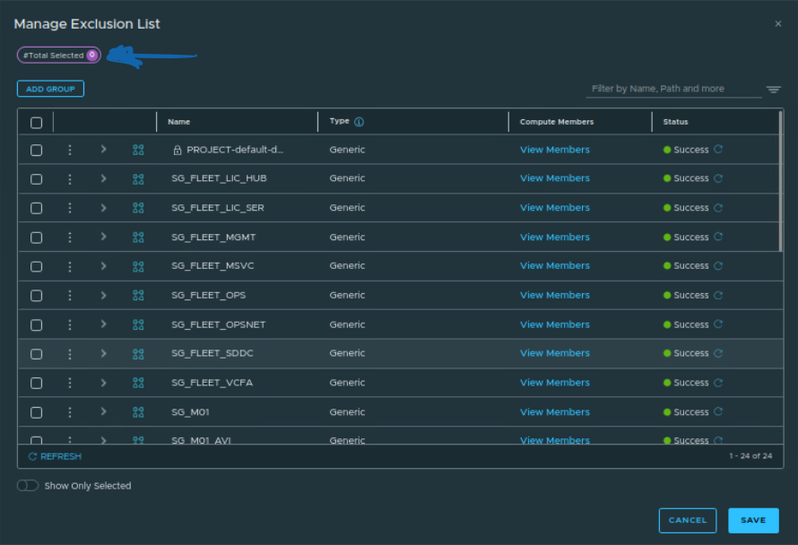
Enable the rules
Back in Category Specific Rules, enable the VCF Fleet rules and Publish. The Lockdown rule is still off in this screenshot, but it needs to be on too, otherwise nothing gets dropped:
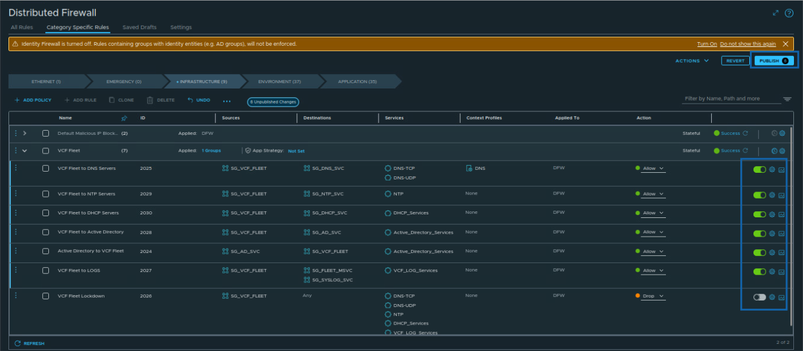
Every rule has its own counters. They refresh every 15 minutes, so zeros right after publishing are normal:
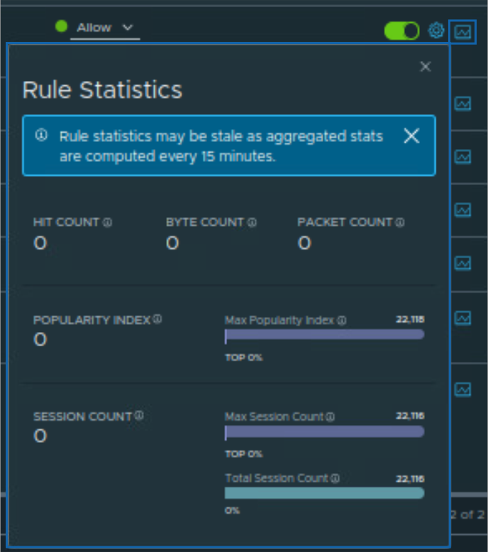
Module 3: Environment rules
The strategy splits the management domain into zones. Environment rules decide which zone can talk to which:
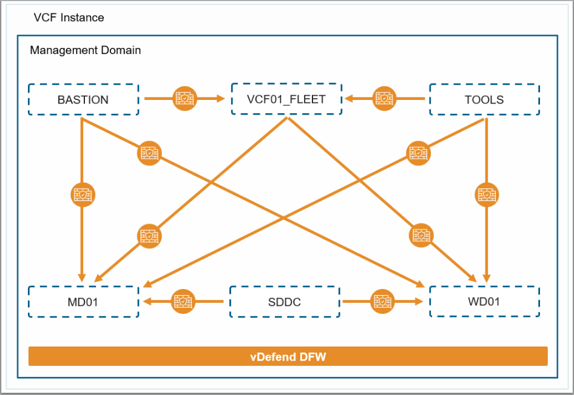
Four policies:
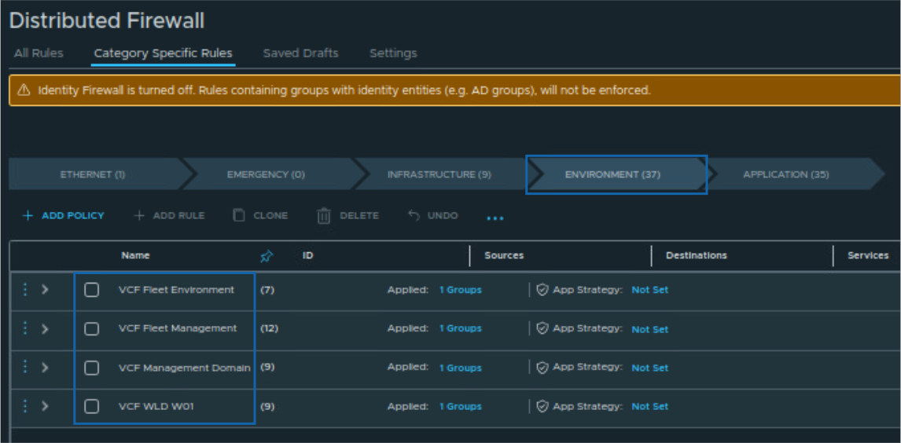
VCF Fleet Environment covers access from outside: bastion and tools in, backups both ways, SMTP, and internet by FQDN:
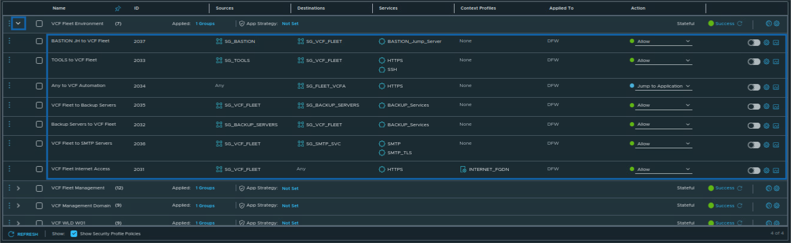
Enabled all the rules in the four policies and published:
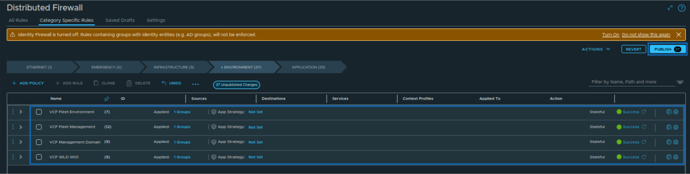
Module 4: Application rules
The most specific level: traffic between the components themselves. Workload Domain 01 as an example:
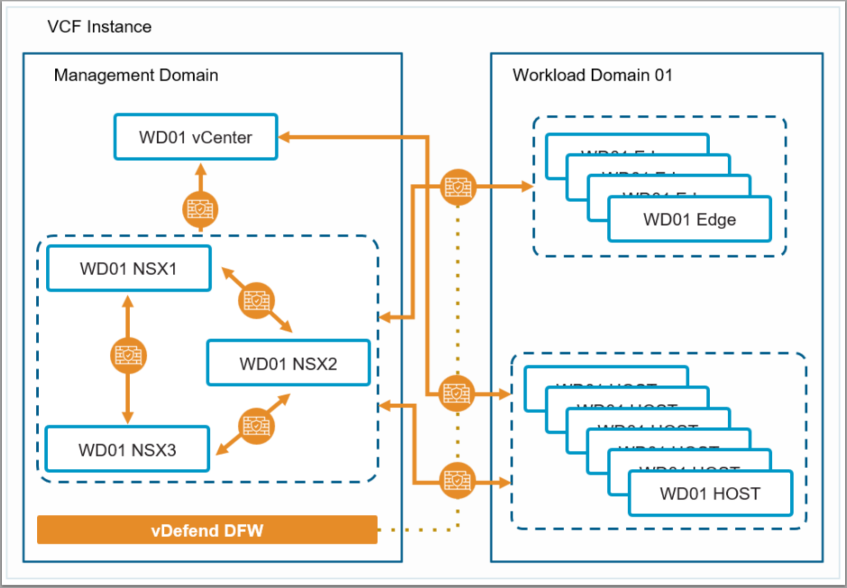
Three policies, plus the default Layer 3 section:
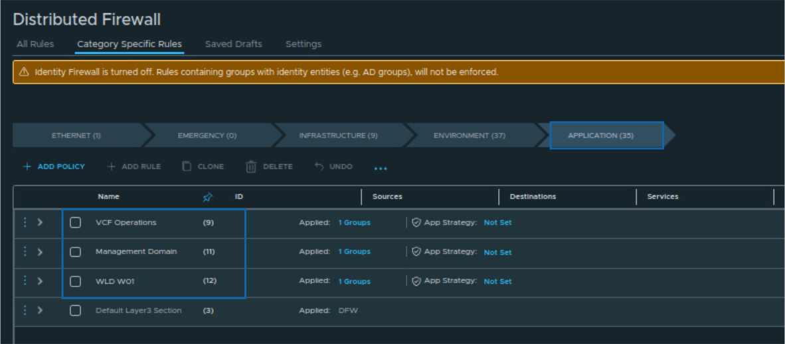
VCF Operations has 9 rules for how the Ops components talk to each other, mostly HTTPS between the SG_FLEET groups:
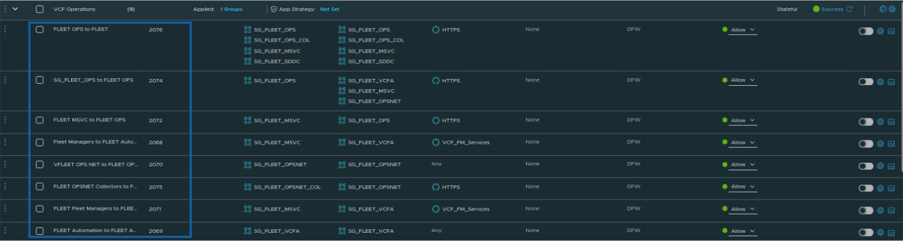
Enabled the rules in all 3 policies and published:
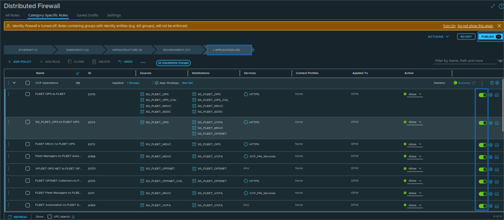
Key takeaways
- Rules do nothing until DFW is on for the cluster.
- VCF puts its own VMs in the exclusion list. Take the group out once the rules are ready.
- A lockdown rule after the allows keeps infra services pointed at the approved servers only.
- Jump to Application hands traffic to more specific rules instead of allowing it.
- Infrastructure, Environment, Application: broad to specific.
Lab completed
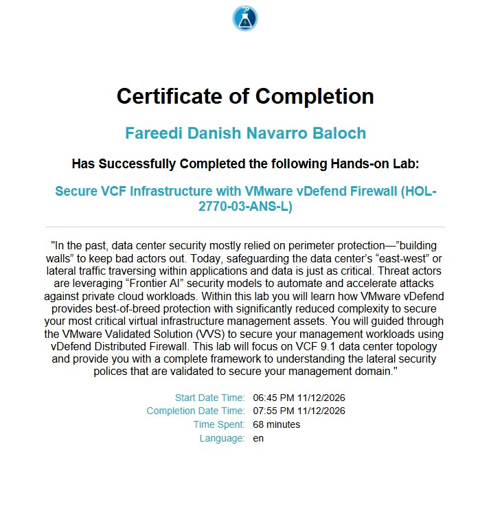